Grupo Sival, el mejor aliado para:
exploración, montaje, explotación-producción, industrialización, transformación, carga, transporte y comercialización de carbón y minerales en la República de Colombia
Conoce más Contáctanos

exploración, montaje, explotación-producción, industrialización, transformación, carga, transporte y comercialización de carbón y minerales en la República de Colombia
Conoce más Contáctanos